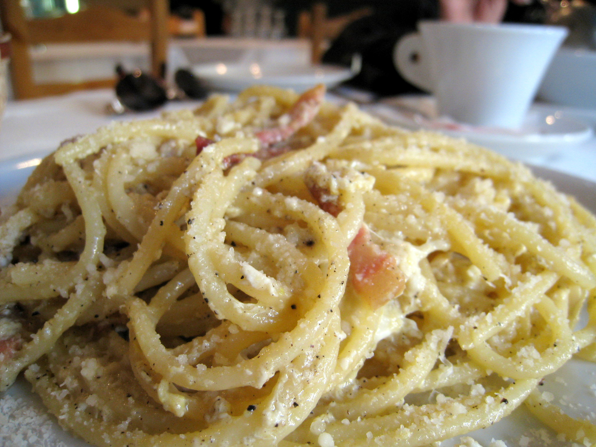

Spaghetti Carbonara

Description
I gotta be honest, this isn't really a full-on recipe. It's definitely not traditional either, since there won't be any pancetta.
- 2 eggs
- Some bacon, you can go for pancetta too if you're feeling traditional
- Pasta, any type really but spaghetti is a good default pick
- Salt and pepper (to taste)
- Grated parmesan cheese, like a bag of it from the store
- Cooked pasta water, keep some when you're done boiling the pasta
Steps
- Cut up your pork into smaller bits, easier to cook.
- Whisk up your eggs and parmesan cheese in a bowl.
- Fill up a pot of water and add a bit of salt, bring pot to a boil
- Add your pasta to the boiling pot and let it cook until al dente
- Keep about half a cup of pasta water, then drain the rest.
- Start with a cold pan, add bacon and let the fat render out as it fries.
- Toss in the pasta into the pan and mix well with the oil.
- Turn off the heat and throw in the egg mix along with a bit of the pasta water, mix quickly for 1 minute otherwise the eggs will actually start to cook.
- Transfer to plates, add salt and pepper to taste then serve.
Home